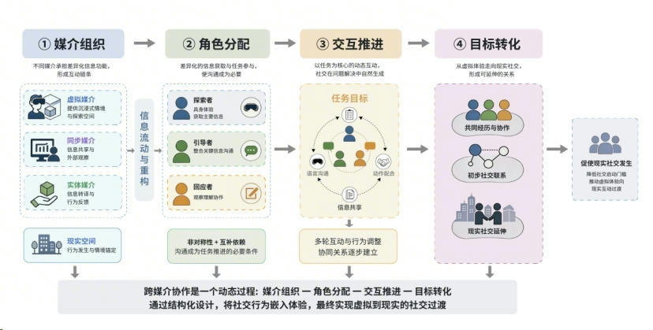

核心设计
这一页对应论文第四章"具身认知视角下大学生社交数字化设计实践"，集中展开 Within 的方案定位、核心目标、跨媒介协作机制、技术实现与落地体验流程。
Within 不是将 XR 当作孤立的沉浸设备，而是把它放进一个由 头显、大屏、实体卡片、移动端与现实空间 共同构成的协作系统中。 核心逻辑是"虚拟体验为内核，现实互动为延伸"，让沟通、判断、配合与共创成为体验推进的必要条件，并最终推动虚拟协作自然转化为现实交流。
方案定位与目标
这一层回答"核心设计究竟在解决什么"。页面内容主要提炼自论文第四章前半部分的方案定位与核心设计目标。
方案定位
以消费级 XR 一体机为核心载体，面向高校校园场景构建可落地的社交数字化设计方案，区别于单纯娱乐型 XR 产品与临床心理干预工具。
具身交互
以身体动作为核心交互入口，让抓取、移动、点按与环境反馈共同构成沉浸式认知闭环，打破传统屏幕媒介的离身式交互局限。
自然社交引导
通过非对称分工、信息拆分与任务驱动，让交流从"刻意发起"转变为"完成任务时自然发生"，从而降低大学生的社交启动门槛。
轻量化落地
基于 Unity 与消费级设备完成轻量化开发，控制硬件成本、运维门槛与场地要求，使方案更适合展陈、校园活动与持续迭代。
技术实现
论文第四章将技术实现拆成开发模式、开发平台规范与具体功能实现三部分，核心都围绕"稳定落地"和"适配一体机性能"展开。
开发模式选择
最终选择 XR 一体机模式而不是串流模式，原因是它更独立、更稳定，也更适合在不同空间中快速复现和部署。
开发平台规范
以 Unity 为核心引擎，结合 OpenXR、XRI 与 PICO 相关 SDK 进行开发；美术层面采用 Low-Poly 与轻量贴图，主动控制模型面数与性能压力。
关键系统实现
通过 Timeline 组织剧情事件，用 Trigger 和道具交互推动叙事；同时采用双摄像机分层渲染，兼顾黑场过渡、文本可读性与 VR 舒适度。
叙事与场景转译
Within 将大学生社交困境转译为章节式叙事和情绪化空间，不是简单复刻校园，而是把心理状态、关系递进和情感冲突转成可体验的虚拟环境。
主线叙事
以萨沙的成长历程为主线，将孤独、犹疑、共情、协作与自我接纳串联成完整体验，让叙事本身成为社交引导工具。
视觉转译
以 Low-Poly 风格弱化写实细节，强化几何结构、色彩隐喻与空间节奏，使用户把注意力更多投向情绪感受、行为反馈与关系变化。
跨媒介协作机制
这是论文第四章最关键的设计结构。不同角色拥有不同权限、视角和信息来源，只有持续沟通，体验才会继续推进。
探索者
佩戴 XR 头显，负责第一人称视角下的沉浸探索、道具使用、场景移动与核心操作，是具身体验的执行者。
引导者
通过同步大屏与纸质卡片掌握更完整的信息结构，负责语言提示、线索拼合、策略判断与任务辅助。
回应者
以轻量方式加入协作闭环，在特定环节提供提示、反馈与氛围支撑，让围观群体也能参与社交过程。
沉浸执行
承载第一人称行动、感知与叙事体验，是具身交互的核心媒介。
全局观察
向场外参与者展示画面、线索与整体情境，为沟通提供共同参照。
线索拼合
承载解谜信息、分支选择与创意任务，是连接虚拟与现实的重要纽带。
关系延伸
承担面对面交流、破冰、复盘与体验结束后的自由对话，让社交行为继续发生。

① 媒介组织
先把 XR 头显、大屏、纸质卡片与现实空间编排成一个“信息流动的场”。
② 角色分配
通过非对称权限与信息拆分，让沟通成为推进任务的必要条件。
③ 交互推进
以任务目标为核心组织互动，形成“协作讨论”而非“强行社交”。
④ 目标转化
在完成任务的过程中完成关系递进，把虚拟协作自然转译为现实交流。
五阶段体验流程
论文把落地体验流程拆成五个递进阶段，每一阶段都对应不同的社交目标和协作强度，确保用户从适配到共创逐步进入状态。
前期准备
完成空间搭建、角色选择、规则说明与轻量破冰，先建立基础安全感与协作共识。
场景融入
探索者熟悉 XR 基础操作，引导者同步理解故事背景和线索框架，进入共同语境。
轻量协作
以低难度信息拆分任务触发首次沟通，用宽容错、低压力的方式建立协作默契。
深度共创
通过递进式解谜、创意绘画和多轮沟通，把协作从功能配合推向情感联结。
现实延伸
在结局、复盘和成果留存后，引导参与者围绕体验与自身经历展开面对面交流。
关键制作内容
第四章后半段把核心制作内容落到具体系统上，包括直觉式具身交互、纸质协作卡片，以及围绕四章展开的子章节任务设计。
直觉式交互
抓取、瞬移、点按、道具使用与黑板绘画等系统，都尽量贴近现实习惯，减少学习成本，让用户更快进入状态。
协作卡片
纸质卡片承担线索提示、同步配合、创意任务与纪念留存功能，是跨媒介协作闭环中的关键创新点。
章节任务
每一章都对应不同痛点与设计目标，从共情、破冰到深度协作与现实转化，形成完整的叙事和社交递进。